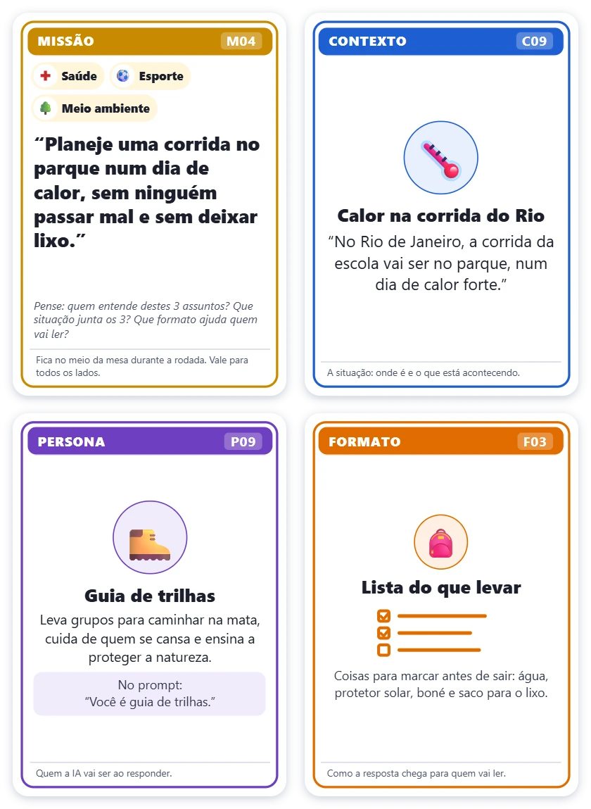
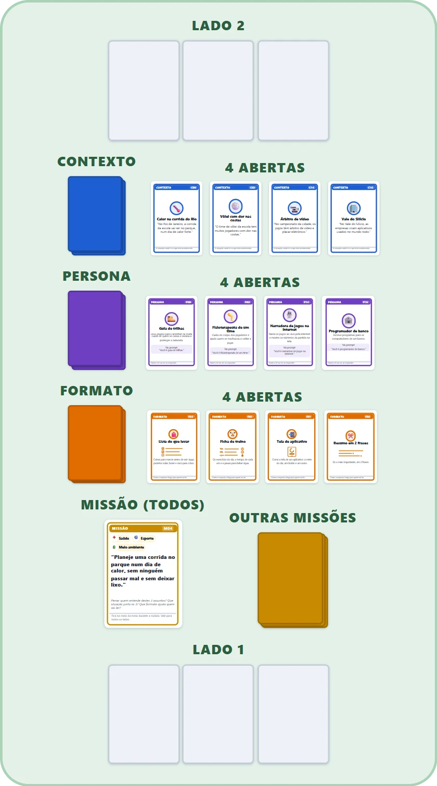
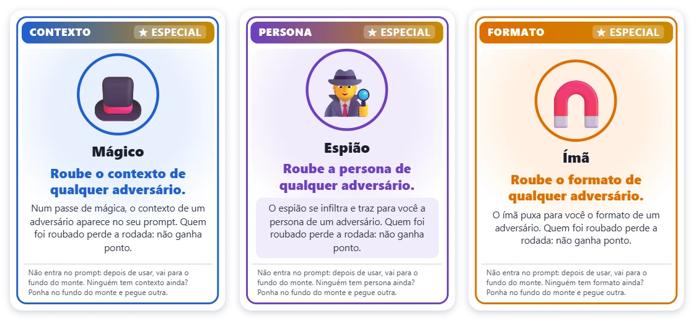

Objetivo: em cada rodada, montar o prompt que mais combina com a missão, com 1 contexto, 1 persona e 1 formato. O melhor prompt da rodada ganha 1 ponto. Depois de 5 rodadas, ganha quem tiver mais pontos.
Para explicar em 1 minuto
- Vire 1 missão. Ela vale para todos os lados e tem 3 assuntos: ✚ Saúde, ⚽ Esporte, 💻 Tecnologia ou 🌳 Meio ambiente.
- Na sua vez (até 1 minuto): pegue 1 carta de cada baralho, uma das 4 abertas na mesa ou a de cima do monte, sem ver.
- Todos escolheram? Virem as cartas. Na página Rodada, o professor digita a missão e as cartas de um lado por vez.
- O aplicativo dá a nota de cada prompt, de 1 a 4, e diz por que perdeu pontos. O melhor ganha 1 ponto.
- Depois de 5 rodadas, ganha quem tiver mais pontos. No fim, o desafio final: conferir se aprendeu.

As 4 partes do prompt
- Persona Quem a IA vai ser? Vem da carta de persona.
- Contexto Onde é e o que está acontecendo? Vem da carta de contexto.
- Tarefa O que você quer que ela faça? É a missão, igual para todos os lados.
- Formato Como a resposta deve chegar? Vem da carta de formato.
Por isso cada lado escolhe só 3 cartas: a tarefa já vem na missão. No desafio final, sem cartas, o problema da escola é a tarefa e cada lado escreve a persona, o contexto e o formato.
Preparação
- Divida a turma em 2 a 5 lados: cada lado é 1 aluno, uma dupla ou um grupo (veja Versões do jogo).
- Embaralhe cada baralho separado (contexto, persona e formato, cada um com a sua carta especial) e ponha os 3 montes virados para baixo no meio da mesa. O verso mostra qual é qual.
- Vire as 4 cartas de cima de cada monte, lado a lado: são as cartas abertas. Saíram 2 ou 3 cartas especiais entre as abertas? Recolha, embaralhe de novo e vire outras.
- Embaralhe as missões e deixe o montinho ao lado.
- Na página Partida, escolha a versão (completa ou rápida) e o modo, cadastre os lados e toque em Sortear quem começa.

Quem começa
- 1ª rodada: o aplicativo sorteia. Na página Partida, toque em Sortear quem começa. Sem celular, os lados tiram par ou ímpar.
- Durante a rodada: a vez segue a ordem dos lados, em sentido horário. O aplicativo mostra de quem é a vez.
- Rodada seguinte: começa o próximo lado. Assim, cada lado tem a chance de ver as abertas primeiro.
Uma rodada
- Vire 1 missão no meio da mesa. Ela vale para todos os lados. Leiam juntos o pedido e os 3 assuntos.
- Na vez do seu lado (até 60 segundos): pegue 1 contexto, 1 persona e 1 formato. Cada uma pode ser uma das 4 abertas ou a de cima do monte, sem ver.
- Pegou uma aberta? Vire a de cima do monte no lugar dela.
- Deixe as 3 cartas viradas para baixo na sua frente. O professor toca em Próximo lado.
- Todos escolheram? Virem as cartas. Na página Rodada, o professor digita o número da missão e toca em OK. Depois aparece um lado por vez, na ordem da rodada: ele digita as 3 cartas desse lado e toca em OK.
- O professor lê a nota e o porquê de cada prompt e toca em Dar o ponto.
- As cartas dos lados voltam para os seus montes (embaralhe), as abertas ficam na mesa e a missão sai do jogo. Na rodada seguinte, começa o próximo lado.
Cartas especiais
Só 1 em cada baralho, de propósito: ninguém sabe quando vão aparecer, e isso cria tensão. As 3 têm o mesmo poder: roubar a carta daquele baralho de qualquer adversário. A carta roubada vale como a sua.

- 🎩 Mágico (contexto): roube o contexto de qualquer adversário.
- 🕵️ Espião (persona): roube a persona de qualquer adversário.
- 🧲 Ímã (formato): roube o formato de qualquer adversário.
Quem foi roubado perde a rodada: não ganha ponto. Na página Rodada, quando aparecer esse lado, toque em Foi roubado. A especial não entra no prompt: depois de usar, vai para o fundo do monte.
Ninguém tem aquela carta ainda (por exemplo, na primeira vez da rodada)? Ponha a especial no fundo do monte e pegue outra.
A nota do prompt
Cada carta combina mais ou menos com cada assunto, de 1 (não combina) a 4 (combina muito). Os números ficam escondidos: os alunos leem as cartas e pensam.
Nota da carta: a média dos 3 assuntos da missão. Nota do prompt: a média das 3 cartas, de 1 a 4.
| Nota | Nível |
|---|---|
| 3,5 a 4 | Ótimo |
| 3 a 3,4 | Bom |
| 2,5 a 2,9 | Médio |
| abaixo de 2,5 | Fraco |
Por que perdeu pontos: o aplicativo mostra as cartas que têm 1 ou 2 num assunto da missão, como “a persona P02 não entende de tecnologia”.
Os números de cada carta estão no gabarito do professor, impresso. Depois do resultado, a página Rodada mostra as melhores cartas para a missão.
Fim da partida
Depois de 5 rodadas, ganha quem tiver mais pontos. O aplicativo avisa.
Empate nos pontos: ganha quem somou as maiores notas nas rodadas.
Desafio final: conferir se aprendeu
- Na página Desafio, sorteie um problema da escola e leia em voz alta.
- Sem cartas, cada lado escreve um prompt com as 3 partes das cartas: persona, contexto e formato. Vocês têm 3 minutos.
- Cada lado lê o seu prompt em voz alta. O professor digita e toca em Ver a nota.
- O aplicativo dá a nota de 1 a 4, sem internet, e diz o porquê de cada parte. Quem tirar a maior nota ganha o desafio e o prêmio que o professor escolher.
Como sai a nota de cada parte (de 1 a 4): a persona entende dos assuntos do problema? O contexto diz onde é, qual é o problema e um detalhe? O formato diz uma forma clara (lista, cartaz, passo a passo…) e para quem, ou quantos itens? Faltou a parte: 1. Com as 3 partes e nota 3 ou mais, o lado aprendeu.
Casos especiais
- Acabou o tempo da vez: pegue agora as cartas que faltam, de cima do monte.
- Mostrou as cartas antes da hora: tudo bem, mas o melhor é guardar segredo até todos pegarem.
- A mesma carta em dois prompts: só existe uma de cada. Alguém digitou o número errado: confira.
- Deu o ponto errado: na página Rodada, toque em Desfazer.
- Sem celular: o gabarito do professor impresso tem os números e a conta.
Versões do jogo
Quanto tempo
Partida completa: 5 rodadas, cerca de 25 minutos. Para uma aula inteira; depois, o desafio final.
Partida rápida: 3 rodadas, cerca de 15 minutos. Mesmas regras, menos rodadas: para o fim da aula ou para a turma aprender o jogo.
Quem joga
Duelo (2 a 4 alunos): 1 contra 1, ou dupla contra dupla.
Mesa (3 a 10 alunos): 3 a 5 lados, todos contra todos.
Em grupos (até 40 alunos): 2 a 5 grupos. Cada grupo é um lado e decide junto. Um porta-voz pega as cartas e lê o prompt, e o porta-voz troca a cada rodada. No aplicativo, escolha Grupos.
Números de teste: 5 rodadas (rápida: 3), 4 cartas abertas em cada baralho e 60 segundos por vez. Podem mudar depois da partida de teste.